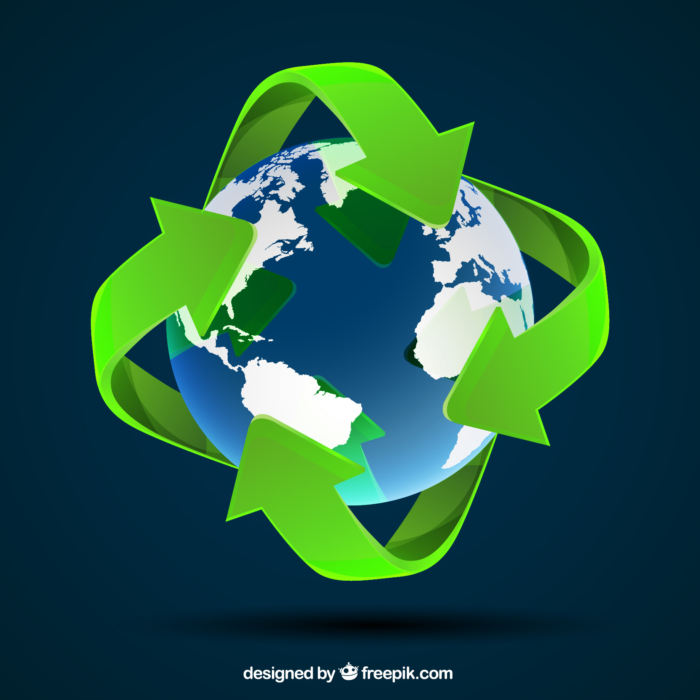
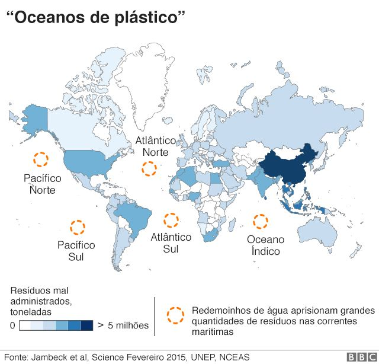
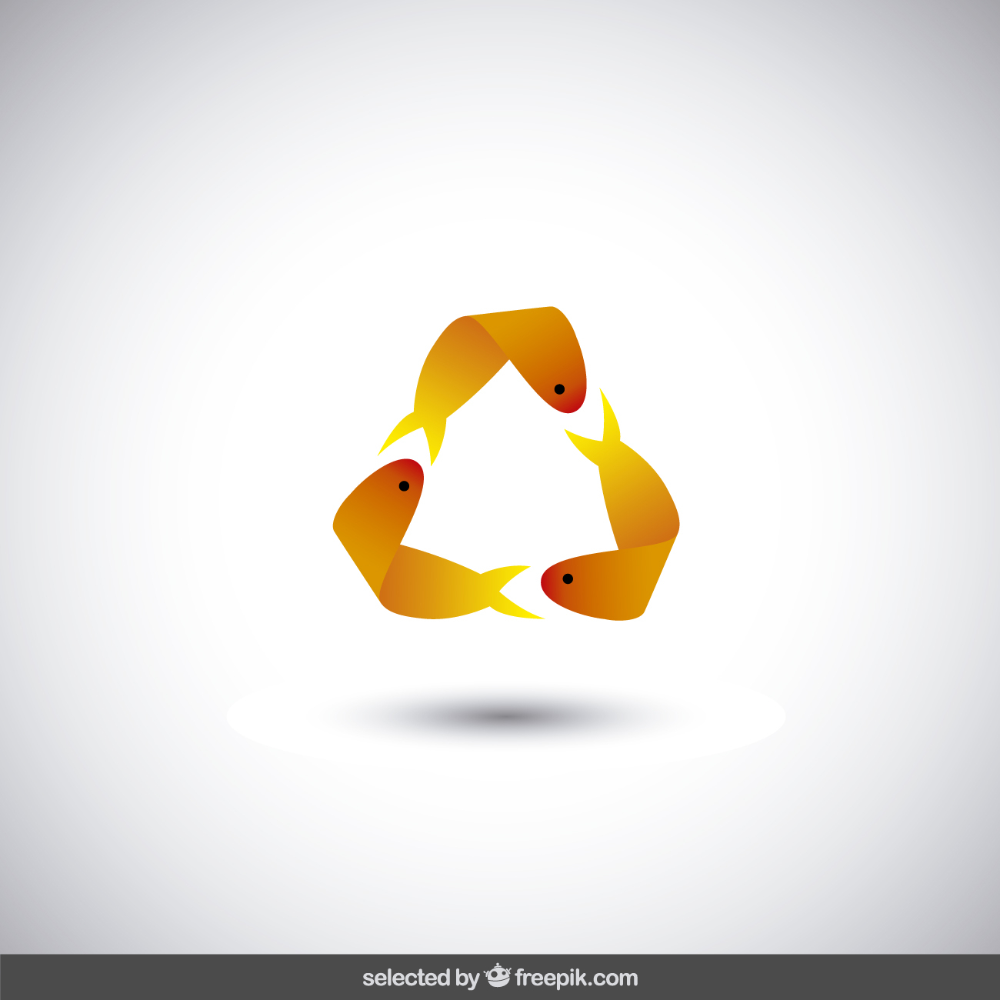
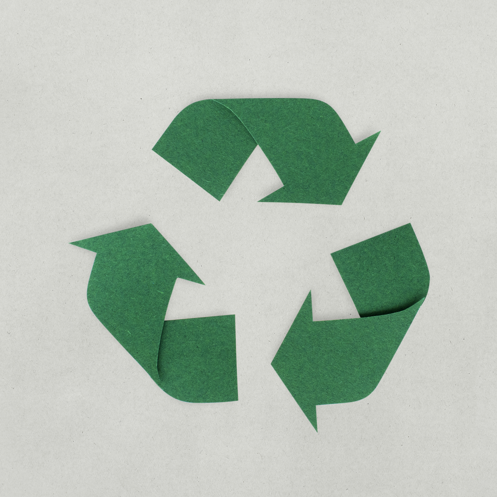
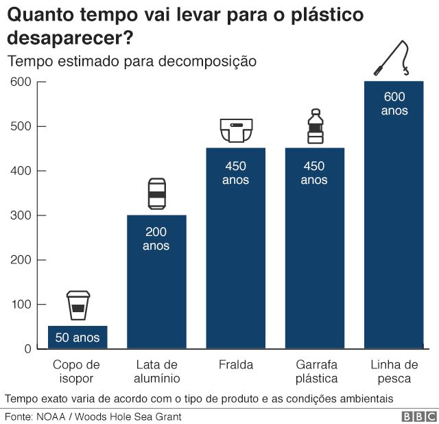
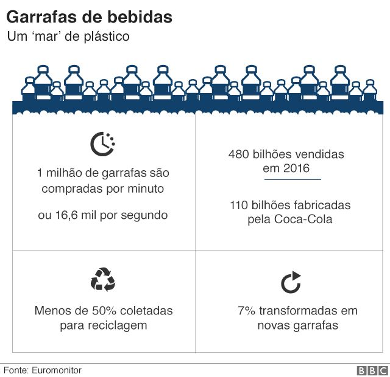

Saúde dos Oceanos
Vida na água
Conservação e uso sustentável dos oceanos, mares e dos recursos marinhos para o desenvolvimento sustentável
Objetivos do Brasil
Até 2025, prevenir e reduzir significativamente a poluição marinha de todos os tipos, especialmente a advinda de atividades terrestres, incluindo detritos marinhos e a poluição por nutrientes.
Minimizar e enfrentar os impactos da acidificação dos oceanos, inclusive por meio do reforço da cooperação científica em todos os níveis.
Até 2030, aumentar os benefícios econômicos para os pequenos Estados insulares em desenvolvimento e os países menos desenvolvidos, a partir do uso sustentável dos recursos marinhos, inclusive por meio de uma gestão sustentável da pesca, agricultura e turismo.
Aumentar o conhecimento científico, desenvolver capacidades de pesquisa e transferir tecnologia marinha, tendo em conta os critérios e orientações sobre a Transferência de Tecnologia Marinha da Comissão Oceanográfica Intergovernamental, a fim de melhorar a saúde dos oceanos e aumentar a contribuição da biodiversidade marinha para o desenvolvimento dos países em desenvolvimento, em particular os pequenos Estados insulares em desenvolvimento e os países menos desenvolvidos.
Proporcionar o acesso dos pescadores artesanais de pequena escala aos recursos marinhos e mercados.
Assegurar a conservação e o uso sustentável dos oceanos e seus recursos pela implementação do direito internacional, como refletido na UNCLOS [Convenção das Nações Unidas sobre o Direito do Mar], que provê o arcabouço legal para a conservação e utilização sustentável dos oceanos e dos seus recursos, conforme registrado no parágrafo 158 do “Futuro Que Queremos.”
INSCREVA-SE NO CANAL
O peixe que se 'adaptou' à poluição e vive dentro de garrafa jogada no oceano

A vida marinha corre o risco de sofrer danos irreparáveis em decorrência de milhões de toneladas de resíduos de plástico que vão parar no mar todos os anos.
"É uma crise planetária. Estamos acabando com o ecossistema oceânico", afirmou à BBC Lisa Svensson, diretora de oceanos do programa da ONU para o Meio Ambiente.
Fonte BBCIniciativa Natura Brasil
O Brasil é o 4º país do mundo que mais gera lixo plástico. Ele também ocupa a 16º posição no ranking dos países mais poluidores dos mares – estima-se que sejam descartados entre 70 mil e 190 mil toneladas de materiais plásticos no mar ao ano. Segundo informações do Programa das Nações Unidas para o Desenvolvimento (PNUD), 83% da água que sai das nossas torneiras contêm partículas desse material. Não à toa, até 2050, é possível que exista mais plástico nos oceanos do que peixes.
É por isso que, para mobilizar e conscientizar a população a respeito desse problema, Kaiak uniu-se ao Instituto Ecosurf para promover a limpeza de praias do litoral brasileiro, contribuir com o meio ambiente e chamar a atenção para um futuro com menos plástico.
Em julho de 2021, realizamos a 1ª limpeza de praia na Ilha do Campeche, Florianópolis – Santa Catarina, com o apoio de agentes de campo e voluntários. A ação reuniu 25 sacos cheios de lixo coletado, com cerca de 148 kg de resíduos. Para se ter uma ideia, 568 unidades de embalagens de plástico foram encontradas no local.
É por conta de dados alarmantes como esse que reforçamos a importância de sensibilizar a população
sobre a problemática do plástico nos oceanos.
Fonte Natura
Tempo de decomposição

Plástico
450 anos
Os produtos feitos de plásticos, definitivamente, não se decompõem em aterros sanitários. As sacolas de plástico, por exemplo, são feitas de polietileno, um polímero criado em laboratório. Os organismos unicelulares que ajudam na sua decomposição, não consomem polímeros, o que dificulta a desintegração completa do plástico. Existem outros itens de plástico que, ao invés de 450 anos, que é a média, podem levar até 1.000 anos para se decompor nos aterros sanitários!

Metal
50 a 200 anos
Produtos feitos como rebites de ferro ou com folhas de aço, não se decompõem com facilidade. As latas, por sua vez, só se decompõem depois mais ou menos 100 anos. Antes disso, viram ferrugem que libera gases tóxicos na atmosfera. Existem peças metálicas que não se enferrujam e, por isso, não se degradam, porque alguns microrganismos não consomem partículas do metal. A quantidade de metal jogado fora no mundo, é bastante alta. Nos Estados Unidos, por exemplo, para cada três meses, são descartadas latinhas que daria para remodelar uma frota inteira de aviões!

Vidro
1 milhão de anos
O vidro é um material que pode ser facilmente reciclado, por ser feito de areia. Para isso, basta quebrá-lo em pedacinhos minúsculos, moer tudo e produzir um novo vidro. O que choca, no entanto, é que quando o vidro vai parar intocável num lixão, ele vai levar uma eternidade para desaparecer. Na verdade, não podemos considerar que o vidro irá desaparecer! Isso ocorre mesmo se o vidro for moído em micro-fragmentos, já que jamais perderá sua massa e os microrganismos não reconhecem as partículas de vidro como alimento.
Por que é prejudicial à vida marinha?
Uma pesquisa da Universidade de Plymouth, na Inglaterra, mostrou que resíduos de plástico foram encontrados em um terço dos peixes capturados no Reino Unido, entre eles o bacalhau.
Além de resultar em desnutrição e fome para os peixes, os pesquisadores dizem que, ao consumir frutos do mar, os seres humanos podem estar se alimentando, por tabela, de fragmentos de plástico. E os efeitos disso ainda são desconhecidos.
Em 2016, a Autoridade Europeia de Segurança Alimentar alertou para o crescente risco à saúde humana, dada a possibilidade de micropartículas de plástico estarem presentes nos tecidos dos peixes comercializados.

